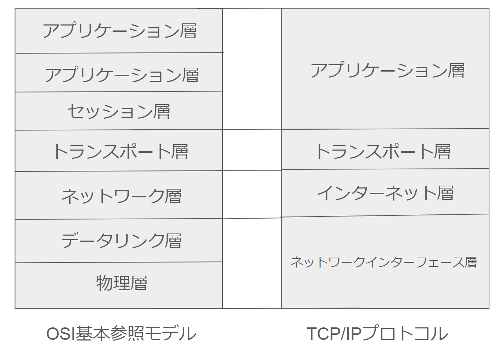
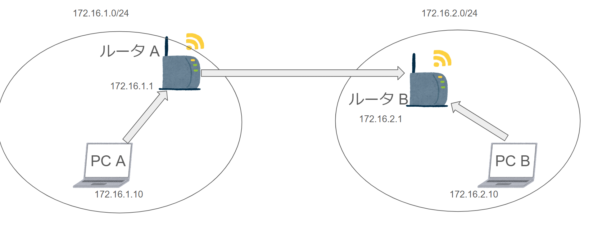

パケットを送信する際のデフォルトルート・ルーティングテーブルなどの通信の一連の流れがなかなか載ってない(各々の構成ばかり)なので全体像を記します。
前提知識
そもそもネットワークって？ => ネットワークとは網を意味するnetに作業workを加えたものです。プロトコルとはコンピュータ同士が通信できるように決められた約束事です。 昔は各社独自にプロトコルを開発してましたが、プロトコルの標準化をするために国際標準機構ISOが通信体系を策定しました。それがOSI基本参照モデルです。 しかし実際はTCP/IPプロトコル群が世界で最も使われてる通信プロトコルです。(このような事実上の標準はデファクトスタンダードといいます)。 OSI基本参照モデルとTCP/IPプロトコルの2種類ありますね。OSIは実装されるものというよりは設計の基礎的な考え方になるそうです。 下にOSI基本参照モデルとTCP/IPプロトコルの画像を貼ります。
またIPアドレスのクラスやCIDR(可変長ネットワークアドレスを/プレフィックスで表すもの)もありますが今回は宛先IPアドレスに届くまでの流れに焦点を当てるので多少省きます。
簡単に言えば、IPアドレスにはネットワークアドレスとホストアドレスがあり、それらをクラスという物で判別してました。
例えば上記画像のクラスBのIPアドレスについてみていきます。
前提として、IPアドレスはIPv4(IP version4)によって、32ビットで構成されています。これは、8ビットずつ4つのセクションに分けられ、各セクションは10進数に変換されてドット(.)で区切られて表現されます
そしてクラスBのネットワークアドレスは先頭16bitです。そしてクラスBは先頭2ビットが10と決まってるので、引いた14bitがネットワークアドレスとして使えるわけです。
0または1の二つの選択肢を持つものが14bitあるので、クラスBのネットワークアドレスは2^14-2(約16382個)となるわけです。
ここで引いた2はネットワークアドレスとブロードキャストアドレスの2つ分です。これらは特別な意味を持つため、通常のホストとしては使用できません。
これだとIPアドレスが枯渇してしまいそうです。しかもクラスごとにネットワーク部とホスト部を分けてるので、効率が悪いのです。
例えば1000人規模の会社があったとします。この会社で使うPCにホストアドレスを割り当てます。(ネットワークアドレスは住所、ホストアドレスはさらに個々を特定するものなのでホストアドレスをPCに割り当てる)
クラスAのアドレスを割り当ててしまうとホスト数が24ビット、つまり2^24-2(16777214個)も利用可能です。これでは実際使うのは1000程度なのに余りまくりで効率的ではないです。次にクラスBのホスト数を見てみると、2^16-2(65534)
個です。これでも余りまくりです。じゃあクラスCはどうかというと、ホスト部が8bitで構成されてるので、2^8-2(214個)です。これでは全然足りないです、なので昔はこのような場合必然的にクラスBを割り当てるしかなかったんですね。
そこでクラスA,B,Cをさらに分割してサブネットワークという複数のネットワークに分割するサブネットマスクというものができました。
これがCIDR(可変長ネットワークアドレスを【/】というプレフィックスで表すもの)です。
可変長ネットワークアドレス｜サブネットマスクについて
つまり、固定だったホスト部の数を各々いい感じに調整できるようになったということです。
可変長ネットワークのメリットはクラスフルネットワーキングの制限を克服することで、IPアドレスの枯渇を防ぎ、ルーティングの効率を向上させることです。
これらを前提に実際のパケット通信の流れを見ていきます。
送るデータにヘッダを付ける
TCP/IPプロトコル群のアプリケーション層から下に行くにつれてデータが付与されていきます。そしてデータリンク(OSI基本参照モデルだとデータリンク層。TCP/IPプロトコルだとネットワークインターフェース層にあたる)ごとに異なる最大転送速度(Maximum
Transmission Unit)
に合わせてパケットを分割していきます。分割されたパケットは途中で再構築されずに、宛先に到着したら分割時のIPヘッダの情報を見て再構築します(IPヘッダ内の識別子にある)。
IPヘッダのデータフォーマットについて
IPの役割は、IPアドレスで宛先の識別、経路制御(ルーティング)、パケットの分割と再構築があります。
先に進む前にルーティングテーブルとは
「パケットの最終的な宛先のIPアドレス」と、「最終的な宛先に届けるため、次にパケットを送る先のIPアドレス」（ネクストホップ）をまとめた情報を保持している。これをルーティングテーブルと呼ぶ。ルーティングテーブルに書かれた情報の一つひとつは、経路情報と呼ばれる。 宛先がルーティングテーブルにない場合はデフォルトルートとして設定されてる別の宛先ルータにパケットが送信され、そのルータのルーティングテーブルを調べて宛先を決めるを繰り返します。 これらを活用して効率的なデータ送信を実現しています。
パケット通信の流れ
上記の画像のようにPC AからPC Bに送るとしましょう。
PC AはPC Bにパケットを送信するために宛先IPアドレス(172.16.2.10)にデータを送信したいです。そのためにPC Aは、
まず適切な経路を制御するために自身のARPテーブルを参照して送るべき宛先IPアドレスが載ってるか調べます。ここで載っていた場合はPC Aと
MACアドレス宛にデータを送信します。(MACアドレスを取得する理由は、データリンク層ではMACアドレスを使用して通信するため)
しかし自身のARPテーブルに載っていない場合は、ARPを行い、宛先MACアドレスを調べます。
宛先 IP アドレスが同一ネットワークではない場合は、ゲートウェイと呼ばれる異なるネットワークと接続しているルーターへ ARP リクエストをおこないルーターが自身の MAC アドレスで応答します。 PC などの端末ではデフォルトゲートウェイとして設定している IP アドレスがそのルーターに該当します。
そしたらパケットの宛先IPアドレスを最終的な目標到達点(この場合:宛先IPアドレス(172.16.2.10))、宛先MACアドレスをデフォルトゲートウェイにしてルータに届けます。
そして、パケットを受けとったルータAは、ルータが持ってるルーティングテーブルをみて、宛先IPアドレスの情報があればそのルーティングテーブルに記載されてる最終的な宛先に届けるため、自身のARPテーブルを参照して次にパケットを送る先のIPアドレス（ネクストホップ）に対応するMACアドレスを見つけて宛先MACアドレスをネクストポップの宛先MACアドレスにし、
宛先IPアドレスは変えずに送信します。
ARPテーブルに無かった場合は、ルータのデフォルトルートにパケットを送信し、それを受け取ったルータがさらに自身のルーティングテーブルを参照、そしてまた上記のような手順
を繰り返すことで最終的な宛先に届くという仕組みになっています。
そしてルータBに届いたら、ルータBはそのパケットの宛先IPアドレスを見て、自身のネットワークだと判断します。そしてルータはARPテーブルに宛先IPアドレスに記載されてる情報がなければ、ARPを行い宛先IPアドレスのMACアドレスを得て
データを送信します。
これがTCP/IPプロトコルでパケットを送信する流れになります。